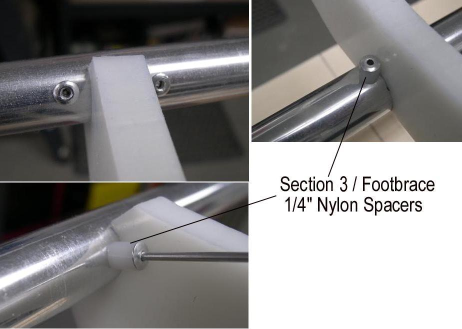

| Cross Section Rivet Stops (4 of 5) | Menu Previous Page Next Page |
|

Pulling Rivets - After drilling, pull rivets at each side of the cross sections at the gunwales, keel, and deckridge.
No rivets are required at the chines with the possible exception of Cross section 3 (footbrace).
Cross Section 3 ( Footbrace) - If used as a footbrace, 1/8" large gap rivets and 1/4" nylon or aluminum spacers are pulled on the bow facing side of cross section 3. Standard rivets are used on the opposite side of the cross section. Use rivets at the chines for addition support for the stress that will be applied to the cross section / footbrace. |
|